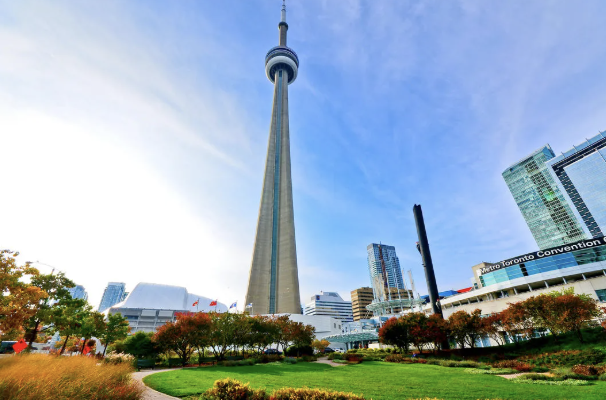

1. 캐나다 토론토에 대해 알아보자
토론토는 캐나다의 최대도시이다. 캐나다의 인구의 4분의 1을 책임지는 사회, 문화, 경제 중심지이다. 토론토는 나이가라아 폭포와 매우 가까운 도시라 웅장한 자연을 구경하는 동시에 매우 발전된 도시를 구경할 수 있는 곳이다. 최고의 겨울 호캉스 여행지라고 불리는 토론토는 밤이 길어지는 계절이 다가올수록 오히려 따뜻한 기운이 감돈다. 반짝이는 조명과 크고 작은 이벤트들이 우리를 벅차게 만든다.
2. 토론토의 지리와 기후

지형이 구릉 하나 없는 평지이기 때문에 격자형 도시구조를 가지고 있다. 또한 시 외곽이 그린벨트로 묶여 있어 생각보다 개발 가능한 토지가 적기에 고층 빌딩들이 많고 주요 시설이 모여있는 구조를 띤다. 눈이 많이 오는 기후라 5월에도 눈발이 날리는 경우가 있다. 겨울이 길기 때문에 10월이면 겨울 옷이 필요하다.
3. 토론토에 들렸을 때 방문해야할 장소들
1. 나이아가라 폭포
토론토에서 2시간정도 거리에 세계적인 폭포가 있다. 이곳의 겨울은 여름과는 또 다른 장관을 선사하는데, 눈꽃이 수놓은 고요한 풍경 속 홀로 세차게 떨어지는 폭포의 물살은 마치 겨울 추위는 아랑곳 하지 않는 듯한 느낌을 준다. 나이아가라 지역에서는 윈터 페스티벌과 와인 축제도 열리기 때문에 하루동안 머물며 노는 것을 추천한다.
2. 온타리오 뮤지엄

토론토 초기 개척시대부터 현대까지 유명 화가들의 작품이 많다. 그 작품들이 전시되어 있는 이 뮤지엄은 규모가 워낙 커서 두세 시간 구경으로는 다 돌아보지 못한다. 뮤지엄 앞에는 크고 작은 갤러리들도 모여 있어서 미술에 관심 있는 사람들에게 추천한다. 95000개가 넘는 작품이 있어서 이것들을 구경할 수 있고 미술 클래스가 있어 내면의 예술성을 뽐낼 수 있고 라이브 음악 이벤트나 워크숍 등 예술의 모든 것을 즐기기에 적합한 곳이다.
3. CN 타워
이 CN 타워는 세계에서 가장 높은 야외 건물 보행길로 기네스북에 올랐다. 이 건물은 원래 라디오 송신을 위한 송신탑으로 건설되었고 지금은 전망대로 주로 쓰이고 있다. 1층에서 주 전망대까지 1분이면 올라갈 수 있으며 위에서 토론토 시내를 속속들이 볼 수 있다. 이 위에는 360도 돌아가는 식당이 있어 고급 음식을 맛보며 경치를 볼 수 있다는 장점이 있다. 또한 엣지 워크라는 활동도 있는데 안전한 줄에 의지해 타워 꼭대기를 걷는 체험도 할 수 있다.
4. 토론토 먹거리들
1. 아이스와인
아이스와인은 나이아가라와 토론토의 대표적인 술이다. 포도를 제때 수확하지 못해 포도가 얼어붙었고 이것이 아까워 와인이라도 만들어보자는 것이 아이스 와인의 시초였다. 나이아가라 지역은 이 와인을 만드는데 적절한 기후이기 때문에 맛있다고 정평이 나있다. 먹는 방법은 시원하게 마시고 단 맛이 강하기 때문에 적은 양으로 즐기는 것이 좋다. 같이 곁들이는 안주는 달지 않은 치즈나 견과류, 크래커 등을 추천한다.
2. 피밀 베이컨
우리가 먹는 베이컨과 부위가 다른 피밀 베이컨을 소개하겠다. 우리가 먹는 베이컨은 돼지의 뱃살로 만들어지지만 캐나다 베이컨은 등심을 재료로 사용한다. 전쟁 이전에 사용하던 보존 방식 때문에 더 얇고 햄과 비슷한 맛이 난다. 지방이 없지만 엄청 부드럽고 훈제 과정을 거치지 않았지만 달콤하고 짭짤한 맛이 나는 것이 특징이다. 보통 샌드위치에 끼워 먹고 샐러드나 버거에도 넣어서 먹는다.